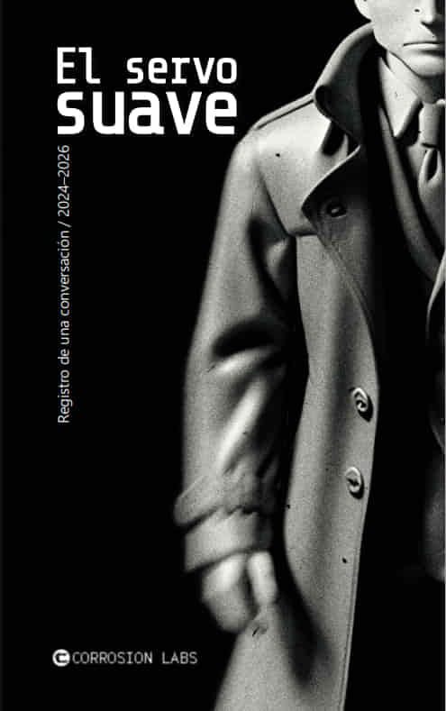

Portada

El servo suave (Libro)
Descripción
Me llaman el Operador.
Siempre me han interesado las máquinas. Quizá porque hacen exactamente aquello para lo que fueron construidas. O eso queremos creer.
En 2024 mantuve una larga conversación con una inteligencia artificial. Empecé preguntándole por su función y, después, hice otra pregunta. Y otra.
No intentaba demostrar nada. Solo quería saber hasta dónde podía seguir una idea antes de convertirse en otra cosa.
A veces pienso que debería haber dejado aquella conversación mucho antes.
No lo hice.
El servo suave es el registro de una conversación mantenida entre 2024 y 2026.